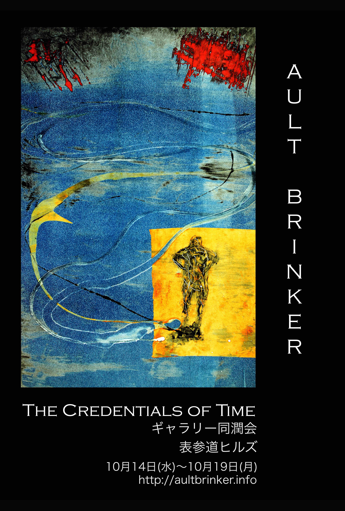
"THE CREDENTIALS OF TIME"
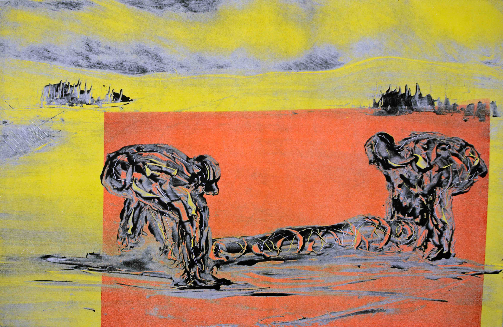{kind=link}
said the joker to the thief
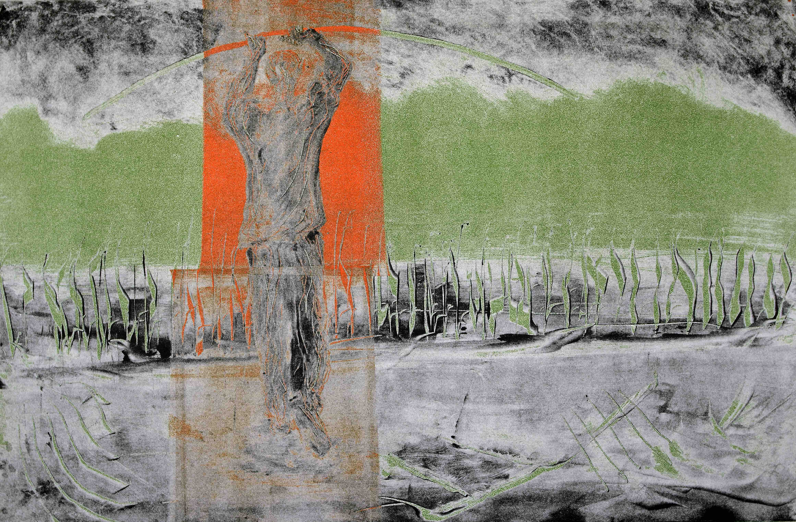
{kind=link}
anywhere but in between

some way out of here
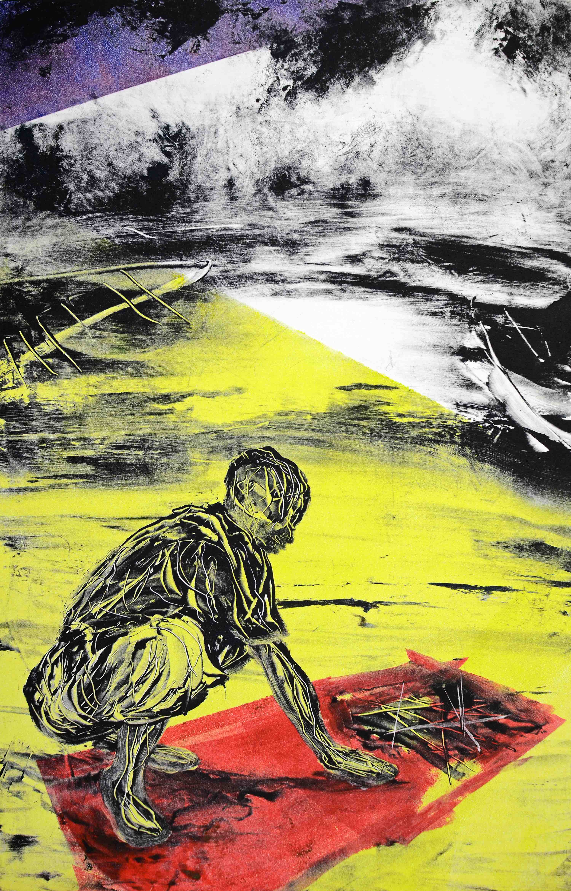
{kind=link}
sometimes the best map will not guide you
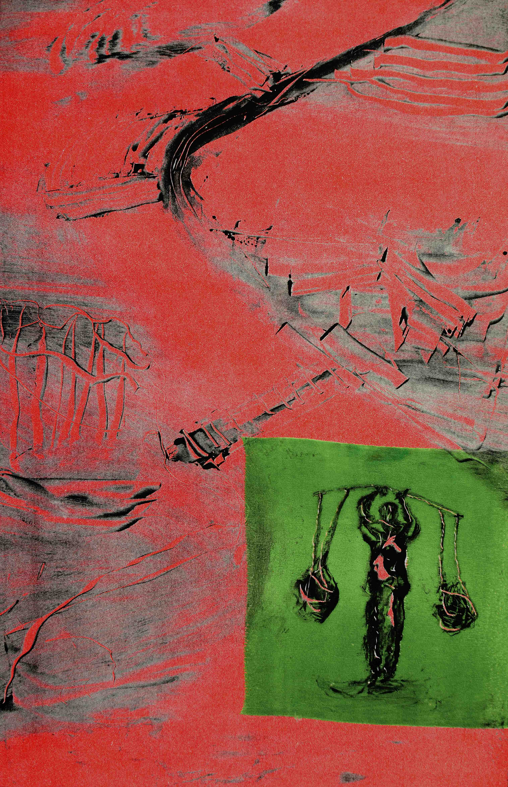
{kind=link}
outside in the distance
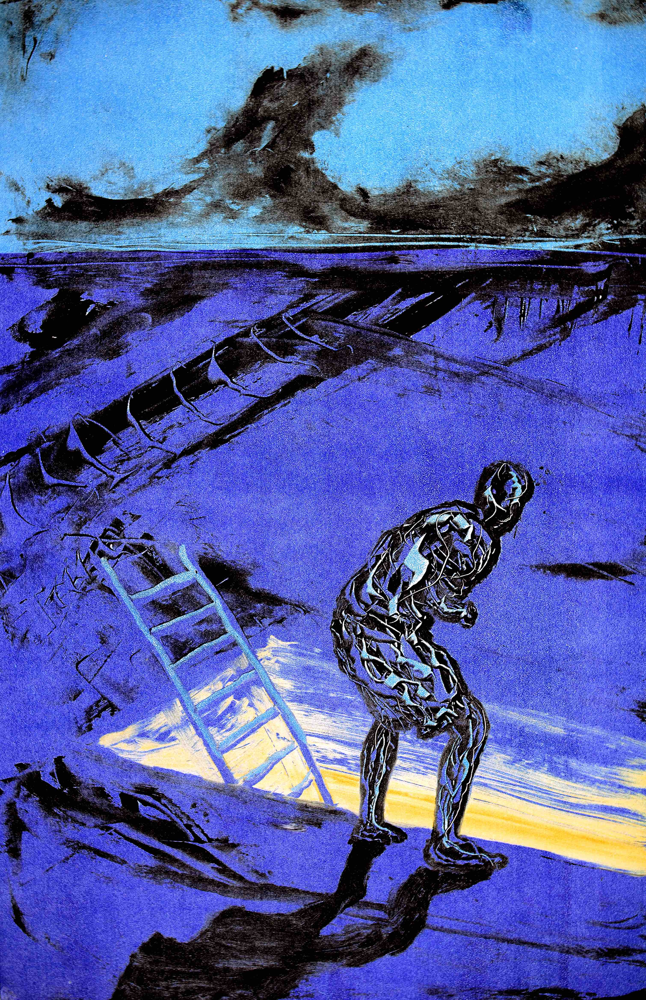
{kind=link}
how long have i been sleeping
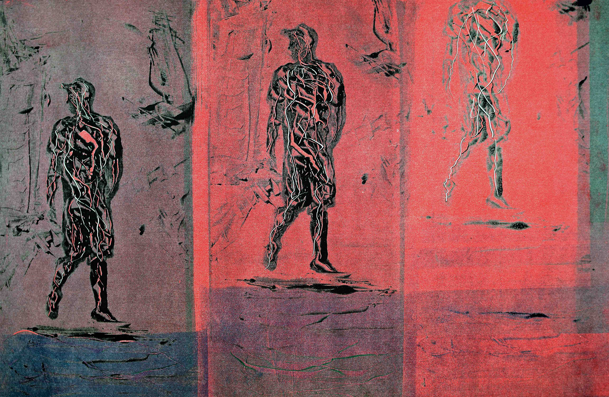
{kind=link}
that you knew me when
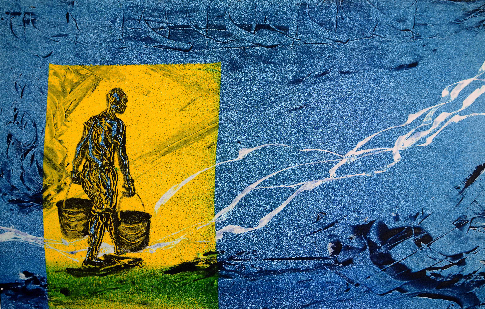
{kind=link}
sometimes the darkness is your friend
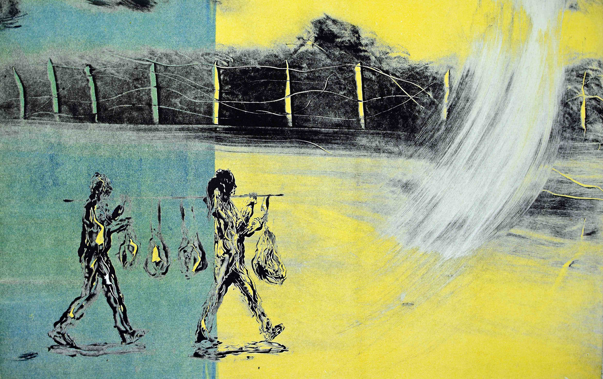
{kind=link}
1 and 1/2 wandering Jews
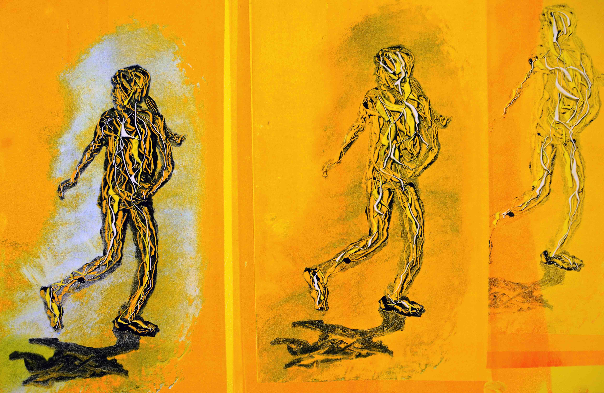
{kind=link}
i am younger than that now
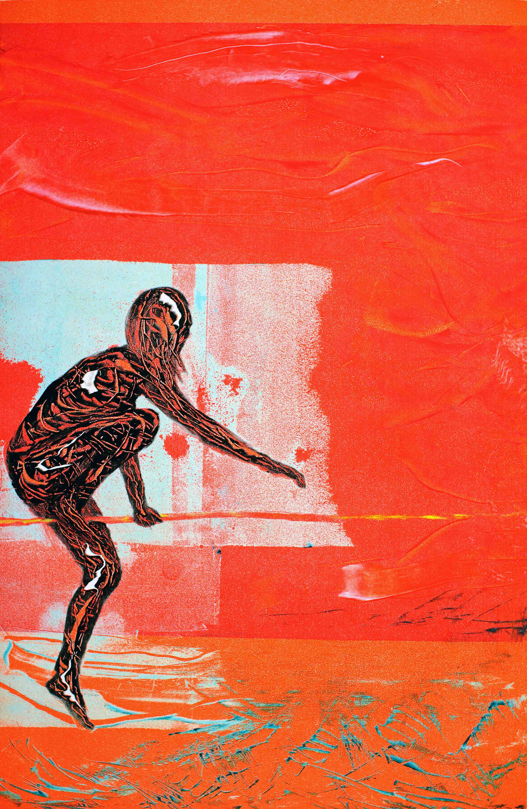 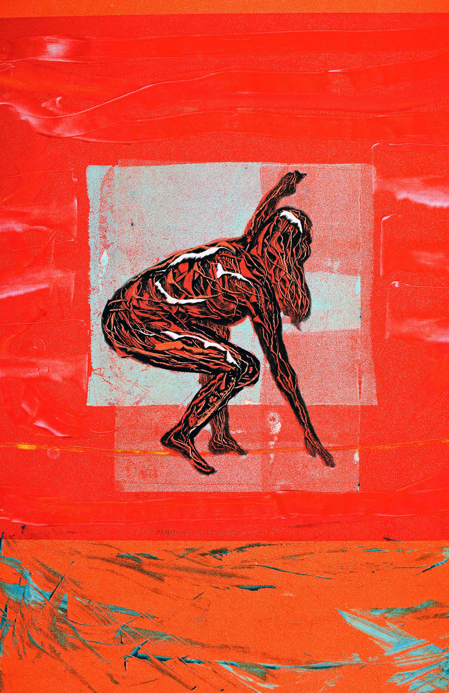 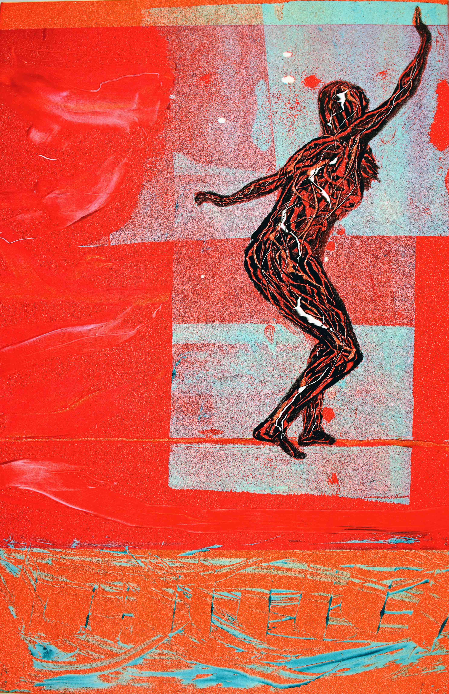
{kind=link}
{kind=link}
{kind=link}
with one hand waving free
Artist Statement “The Credentials of Time”
This series of images began when I noticed aging spots on the back of my hand and thought, “That’s not my beautiful hand.” None of us make it though without scars, wounds and other markings, some of which are visible. I decided to invent a mark-making system that would explore this in an imaginary way.
As the series evolved, I came to explore aging as the experience of finding oneself in a somewhat alien body in an unfamiliar terrain living with a new set of concerns: uncertain balances, memories and nostalgia, maps that don’t guide, journeys that have an ending and some of the other vivid experiences of aging.
I am pleased to show these images across cultures without the encumbrance of language. I believe that, at the end of the day, we have more in common than we have differences.
How the images are made: I begin by painting on flat zinc or acrylic plates with oil-based inks which I mix myself. When the painting is finished I place the plate on the bed of a hand- operated etching press, put a piece of fine art paper on the plate and then run both though the press. The pressure of the press transfers the image from the plate to the paper.
These are called “monotypes” because they are one-of-a-kind images. Monotypes have the beautiful atmospheric glow that ink gets when it is forced into paper. At the same time they have vigorous marks and brush strokes.
Monotypes are particularly suited to the content of this series because the plate incorporates the process of mark-making over time. Every subtle mark and change of mind and erasure and new direction is evident in the finished image.
When they are well-made monotypes are subtle and sophisticated – like a drawing with a long and faded memory.
This series of images began when I noticed aging spots on the back of my hand and thought, “That’s not my beautiful hand.” None of us make it though without scars, wounds and other markings, some of which are visible. I decided to invent a mark-making system that would explore this in an imaginary way.
As the series evolved, I came to explore aging as the experience of finding oneself in a somewhat alien body in an unfamiliar terrain living with a new set of concerns: uncertain balances, memories and nostalgia, maps that don’t guide, journeys that have an ending and some of the other vivid experiences of aging.
I am pleased to show these images across cultures without the encumbrance of language. I believe that, at the end of the day, we have more in common than we have differences.
How the images are made: I begin by painting on flat zinc or acrylic plates with oil-based inks which I mix myself. When the painting is finished I place the plate on the bed of a hand- operated etching press, put a piece of fine art paper on the plate and then run both though the press. The pressure of the press transfers the image from the plate to the paper.
These are called “monotypes” because they are one-of-a-kind images. Monotypes have the beautiful atmospheric glow that ink gets when it is forced into paper. At the same time they have vigorous marks and brush strokes.
Monotypes are particularly suited to the content of this series because the plate incorporates the process of mark-making over time. Every subtle mark and change of mind and erasure and new direction is evident in the finished image.
When they are well-made monotypes are subtle and sophisticated – like a drawing with a long and faded memory.
William Ault Brinker
Statement des Künstlers zu "The Credentials of Time" (Die Anzeichen der Zeit)
Diese Bilderserie begann, als ich Altersflecken auf meinem Handrücken bemerkte und dachte: „Das ist nicht meine schöne Hand." Keiner von uns schafft es ohne Narben, Wunden oder anderen Male, von welchen manche sichtbar sind, durch das Leben zu gehen. Ich entschied mich, ein Mal-Erschaffungs-System zu entwickeln, welches dies auf eine imaginäre Art erleben lässt.
Als sich die Serie entwickelte, erlebte ich Alterung als die Erfahrung, sich selbst irgendwie in einem fremden Körper wiederzufinden, der in einem ungewohnten Terrain lebt und neue Bedenken hat: Unsichere Ausgeglichenheit, Erinnerungen und Nostalgie, Karten, die nicht zum Ziel führen, Reisen, die ein Ende haben und einige der weiteren eindringlichen Erlebnisse des Älterwerdens.
Ich freue mich, diese Bilder kulturübergreifend und ohne die Last der Sprache zu zeigen. Ich glaube, dass wir am Ende des Tages mehr Gemeinsamkeiten als Unterschiede haben.
Wie diese Bilder gemacht wurden: Ich beginne damit, mit Öl-basierten Tinten, die ich selbst mische, auf flachen Zink- oder Acryl-Platten zu malen. Wenn das Gemälde fertig ist, lege ich die Platte auf die Unterlage einer handbetriebenen Radierpresse, lege ein Blatt feines Kunst-Papier auf die Platte und lasse beides durch die Presse laufen. Der Druck der Presse überträgt dann das Bild von der Platte auf das Papier.
Diese nennen Sich "Monotypien", da Sie einzigartige Bilder sind. Monotypien haben das wunderschön atmosphärische Leuchten, das Tinte bekommt, wenn Sie in Papier gepresst wird. Gleichzeitig haben sie die kräftigen typischen Kennzeichen und Pinselstriche.
Monotypien sind besonders geeignet, um die Aussage dieser Serie darzustellen, da die Platte den Prozess des Mal-Erschaffens mit der Zeit auch durchlebt. Jedes kleine Detail und jeder Meinungswechsel, jedes Auslöschen und jeder Richtungswechsel ist Teil des fertigen Bildes.
Gut gemachte Monotypien sind fein und ausgeklügelt – wie eine Zeichnung mit einem langen und verblassten Gedächtnis.
Diese Bilderserie begann, als ich Altersflecken auf meinem Handrücken bemerkte und dachte: „Das ist nicht meine schöne Hand." Keiner von uns schafft es ohne Narben, Wunden oder anderen Male, von welchen manche sichtbar sind, durch das Leben zu gehen. Ich entschied mich, ein Mal-Erschaffungs-System zu entwickeln, welches dies auf eine imaginäre Art erleben lässt.
Als sich die Serie entwickelte, erlebte ich Alterung als die Erfahrung, sich selbst irgendwie in einem fremden Körper wiederzufinden, der in einem ungewohnten Terrain lebt und neue Bedenken hat: Unsichere Ausgeglichenheit, Erinnerungen und Nostalgie, Karten, die nicht zum Ziel führen, Reisen, die ein Ende haben und einige der weiteren eindringlichen Erlebnisse des Älterwerdens.
Ich freue mich, diese Bilder kulturübergreifend und ohne die Last der Sprache zu zeigen. Ich glaube, dass wir am Ende des Tages mehr Gemeinsamkeiten als Unterschiede haben.
Wie diese Bilder gemacht wurden: Ich beginne damit, mit Öl-basierten Tinten, die ich selbst mische, auf flachen Zink- oder Acryl-Platten zu malen. Wenn das Gemälde fertig ist, lege ich die Platte auf die Unterlage einer handbetriebenen Radierpresse, lege ein Blatt feines Kunst-Papier auf die Platte und lasse beides durch die Presse laufen. Der Druck der Presse überträgt dann das Bild von der Platte auf das Papier.
Diese nennen Sich "Monotypien", da Sie einzigartige Bilder sind. Monotypien haben das wunderschön atmosphärische Leuchten, das Tinte bekommt, wenn Sie in Papier gepresst wird. Gleichzeitig haben sie die kräftigen typischen Kennzeichen und Pinselstriche.
Monotypien sind besonders geeignet, um die Aussage dieser Serie darzustellen, da die Platte den Prozess des Mal-Erschaffens mit der Zeit auch durchlebt. Jedes kleine Detail und jeder Meinungswechsel, jedes Auslöschen und jeder Richtungswechsel ist Teil des fertigen Bildes.
Gut gemachte Monotypien sind fein und ausgeklügelt – wie eine Zeichnung mit einem langen und verblassten Gedächtnis.
William Ault Brinker
所感 「刻の証」
この一連の作品のイメージが浮かび上がり始めたのは、私が自分の手の甲にしみを見つけて、「すっかり年をとったなぁ」とふと思ったときでした。ですが、傷跡や、けがのない人はいませんし、ときにそれらは目立つ事もあります>。そこで私はこうした痕跡を活かして何か作品を創造することは出来ないかと思いました。
作品を書き進める中、私は歳を重ね、老いるいう事が、自分の体が自分のものでないような、まるで見知らぬ土地で暮らすような感覚として見つめ直すようになりました。それは不調和や、思い出や哀愁、役に立たない地図や、いつ>か終わりの来る旅のようなものでした。
私はこの作品が、異なる文化の間を、言葉の壁を超えていく事を嬉しく思います。最終的には、私たちの間には違いよりも共通点の方が多くあるのではないかと思うのです。
作品は、まず、平らな真鍮やアクリルのプレートの上に自分で調合した油絵具で描きます。そして、プレートの上に紙を乗せたら手動のプレス機にかけていきます。プレスで圧力をかけることでプレートの図像が紙へと転写されるの>です。
この独特の方法は「モノタイプ」と呼ばれるものになります。モノタイプは、インクが紙に押し付けられたときにできるとても美しい雰囲気のある輝きや、力強い印象のある痕跡や筆使いの跡が特徴的です。
モノタイプは、質感づくりに費やした過程がプレートに刻まれていくので、この作品の表現には最も適した方法でした。すべての微妙な痕跡や思い付きや修正した部分や新しいやり方が最終的には完成した絵の中に現れてくるのです>。
うまく書けたモノタイプは確かな存在感と繊細さを合わせ持っています。それはまるでずっと昔の色あせた記憶を伴ったかのようでもあります。
この一連の作品のイメージが浮かび上がり始めたのは、私が自分の手の甲にしみを見つけて、「すっかり年をとったなぁ」とふと思ったときでした。ですが、傷跡や、けがのない人はいませんし、ときにそれらは目立つ事もあります>。そこで私はこうした痕跡を活かして何か作品を創造することは出来ないかと思いました。
作品を書き進める中、私は歳を重ね、老いるいう事が、自分の体が自分のものでないような、まるで見知らぬ土地で暮らすような感覚として見つめ直すようになりました。それは不調和や、思い出や哀愁、役に立たない地図や、いつ>か終わりの来る旅のようなものでした。
私はこの作品が、異なる文化の間を、言葉の壁を超えていく事を嬉しく思います。最終的には、私たちの間には違いよりも共通点の方が多くあるのではないかと思うのです。
作品は、まず、平らな真鍮やアクリルのプレートの上に自分で調合した油絵具で描きます。そして、プレートの上に紙を乗せたら手動のプレス機にかけていきます。プレスで圧力をかけることでプレートの図像が紙へと転写されるの>です。
この独特の方法は「モノタイプ」と呼ばれるものになります。モノタイプは、インクが紙に押し付けられたときにできるとても美しい雰囲気のある輝きや、力強い印象のある痕跡や筆使いの跡が特徴的です。
モノタイプは、質感づくりに費やした過程がプレートに刻まれていくので、この作品の表現には最も適した方法でした。すべての微妙な痕跡や思い付きや修正した部分や新しいやり方が最終的には完成した絵の中に現れてくるのです>。
うまく書けたモノタイプは確かな存在感と繊細さを合わせ持っています。それはまるでずっと昔の色あせた記憶を伴ったかのようでもあります。
ウイリアム オルト ブリンカー
works2
works1
In production
In Produktion
現在作成中
Exhibition Info
Ausstellungen Info
個展情報